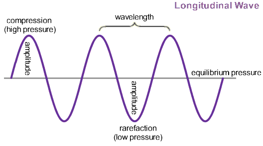

Indoor Sound Visualization
Welcome to our educational Indoor Sound Visualization tool! The black dot in the rectangle represents an omni-directional audio source, while the rectangle represents an environment where the sound waves are contained. You can change the amplitude of the sound wave with the leftmost slider, which roughly corresponds to the "loudness" of the sound. You can also manipulate the frequency of the sound wave with the middle slider, which corresponds to the "pitch" of the sound. Lastly, you can choose which material you would like the environment to be made of, in order to simulate different reflections of the sound waves at different locations. Learn more in our Final Paper.
Amplitude
The "loudness" of a sound wave is measured in decibels, which are measured as 10 times the logarithm of the Power Ratio. The Power Ratio is the Amplitude squared, so the "loudness" of the sound is 10 times log ( amplitude ^ 2). Here we have simplified this scientific equation so that the amplitude is directly related to the "loudness" of the sound, in order to more easily understand the amplitude's relationship to the "loudness". This is visually represented as the thickness of the rings.
Frequency
The frequency of a sound wave is measured in hertz, or cycles per second. A cycle in this case refers to one completion of the sound wave traveling from it's starting position back to it's starting position. The frequency of the sound wave is directly related to the "pitch" of the sound also, so a lower frequency creates a deeper sound, while a higher frequency creates a more high pitched sound. The general perceivable range of human hearing is between 20 and 20000 hertz, but this range is too large to effectively simulate in this model. Because of this we decided to provide a range of 20 to 2000 hertz.
Material
The material the environment is made of defines how much energy is absorbed and how much is reflected. This is determined by the absorption coefficient, where a perfectly absorbent material corresponds to a coefficient of 1, because all sound energy is absorbed. Whereas a perfectly reflective material corresponds to a coefficient of zero, because none of the energy is absorbed. These coefficients were determined by Dr. Wallace Sabine, who has been deemed the father of modern architectural acoustics. We defined different reflection points among the environment that we thought best modeled the significance of the sound's reflective properties.
Our Model
In order to understand the reflective properties of sound given spatial boundaries, we needed to modify the traditional model of of the sine wave. To provide context, imagine the above sine wave rotated about its x-axis, towards you 90 degrees, then extended 360 degrees around our point-source model (black dot) in the interactive visualization. Our model displays the peaks (compression points) of each sine wave propagating outward in an omni-directional fashion. Thus, frequency corresponds to the distance between the resulting concentric circles, or in this picture, the wavelength. This frequency is however slowed down to a more visually acceptable extent; 100 cycles/second is displayed closer to 2 cycles/second (hz). Additionally, the vertical amplitude is encoded in our model as the thickness of each concentric circle.